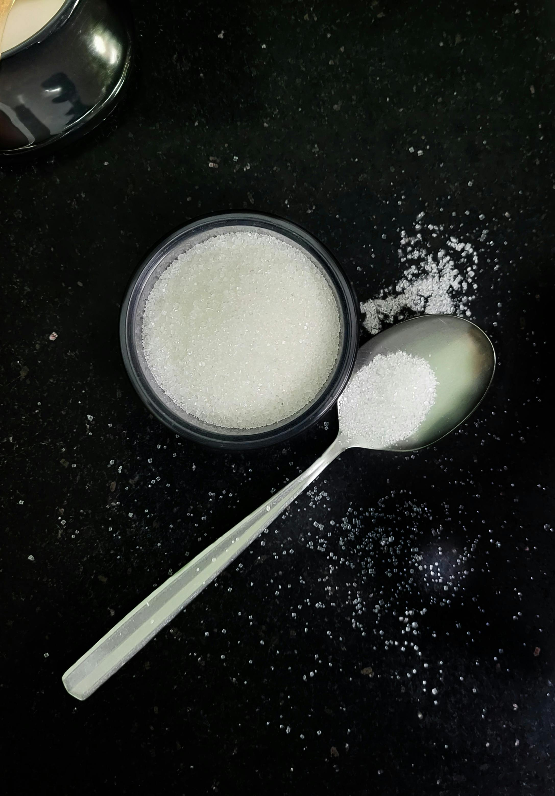

Image source: Pexels,
Sugar is composed of carbon, hydrogen, and oxygen atoms. Sugar can be found in almost all the processed food, including food that are advertised as healthy.
There are more than 60 different names sugar. Some common examples are sucrose, high-fructose corn syrup, fructose, maltose.
Since becoming a mother, I have started reading food labels and ingredients lists more carefully so I can reduce the amount of sugar in my family's diet.
Food manufacturers often use different names for sugar on labels and use words like "fruit juice" or "natural sugar" to make products seems healthier than they really are.
I believe that sugar is still sugar weather it comes from sugar cane or fruits, because the body processes it in a similar way.
I try my best to limit the amount of processed sugar in my daughter's diet and avoid products that contain added sugar.
Reading labels are important because sugar are often hidden in foods that are labeled as healthy. For example: yogurt, granola bars, fruit drinks, breakfast cereals usually contains a lot of sugar.
It is also important to be mindful about serving sizes. Sometimes kids' yogurt drinks has 12-16 grams of sugar in 4oz or 6oz serving.
By checking the ingredients list and nutritional value, families can make informed decissions on where or not a certain food is worth giving it to your kids.
Learn more about healthy sugar intake at: American Heart Association